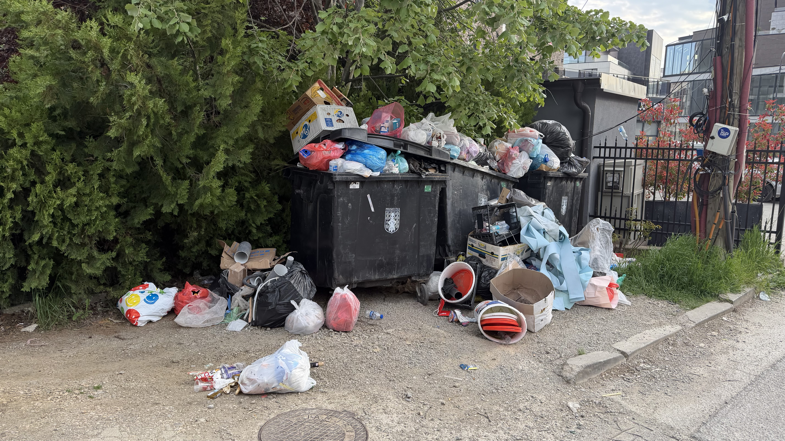
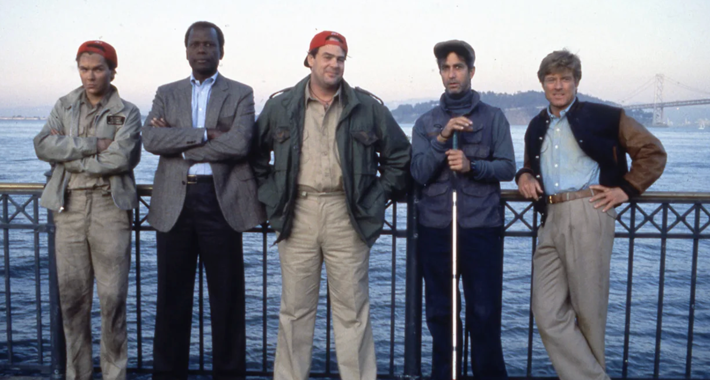
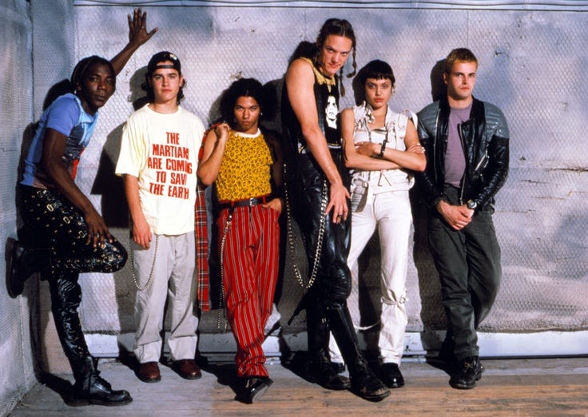
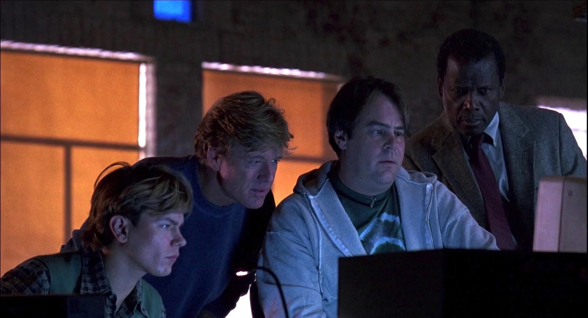
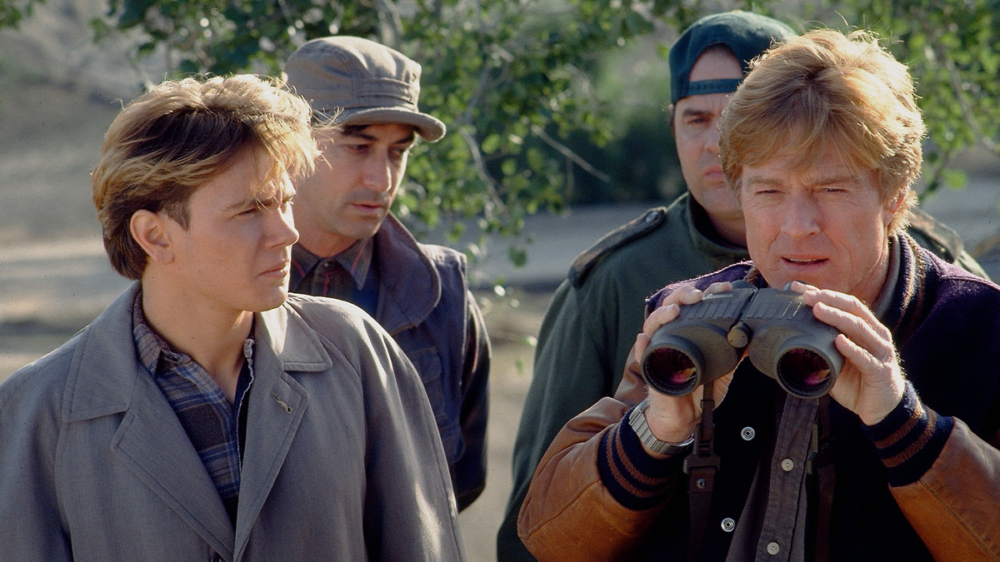
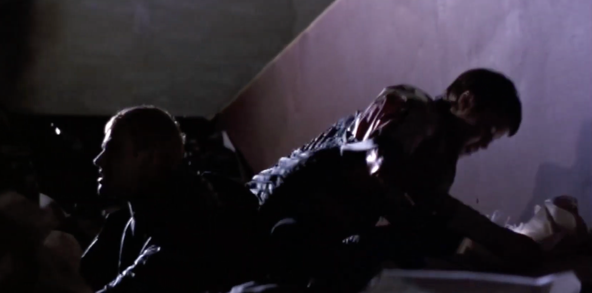
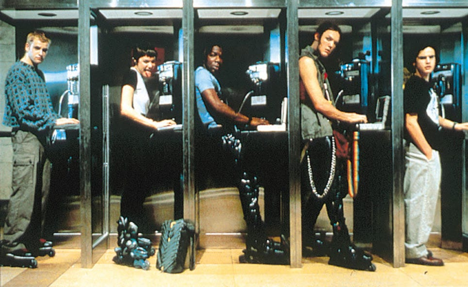

images/01-pristina-dumpster.jpeg
alt: 2-frame composite — same dumpster, two locations / two days · proves "the dumpsters move"
This is a corner near my apartment.
I've been here about a month and the dumpsters move. They aren't always in the same place. And it's not clear when they get picked up.
I figured okay, fine, there must be a schedule. So I tried to find it.
But I did find something interesting.
I mapped out a whole network. The operations layer connects to the city layer, which connects to the national layer, and then trash works into the international level. And then all the way back to the everyday people.
This is a wildly complicated system.
And it's fascinating.


images/03-sneakers.png + images/03-hackers.jpg
left: Sneakers team · right: Hackers gang · whichever shots best read "crew studying a system"
This makes me think of two of my favorite movies.
Sneakers, 1992. Hackers, 1995.
In Hackers, they explore and they map. They dumpster-dive for manuals. The trash is key.
In Sneakers, the team also collects trash. They examine it. They build a whole profile from it. The trash tells them everything.
Trash tells us how systems work.
This room is full of system thinkers. So let's explore the trash.

images/04-sneakers.jpg
Sneakers (1992) — crew gathered around the monitor
The idea isn't to "fix" a trash problem. I don't even want to call it a problem.
It's a system, and we can model it.
Once we have a model we can build a simulation. Almost like a game... see how the pieces impact each other.
One. Complex systems are easier to understand by playing them. Think SimCity.
Two. It's open. It sits on a website, open license on GitHub.
Three. Building it forces precision. You can't model a system you don't understand.

images/06-sneakers.jpg
Sneakers (1992) — crew shot · "no winner, the sim wins" beat
And importantly, we work on this together.
Normal hackathons are competitive. Teams pitch, judges pick a winner, everyone else's code goes in a drawer.
To explore the trash we work together.

So let's hack the trash.
How far can we get in a weekend?
We break up into teams. Each team takes a piece. One team models municipal collection. One team models the recycling stream. One team models the informal scavenging economy. One team models the EU compliance reporting layer.
We define an interface first. We research, we build, and we connect it all together.
I can sponsor with free Claude tokens.

images/07-hackers.jpg
Hackers (1995) — closing callback · bookends the deck
The practical stuff.
This coming weekend if we can. Token allocation that runs out soon.
We just need people, power, internet... and a willingness to dig into the trash.
The next steps are for whoever shows up.